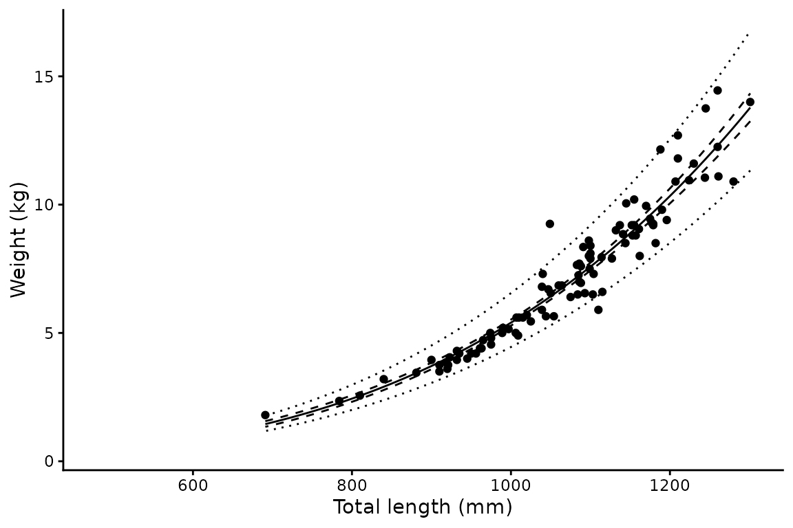
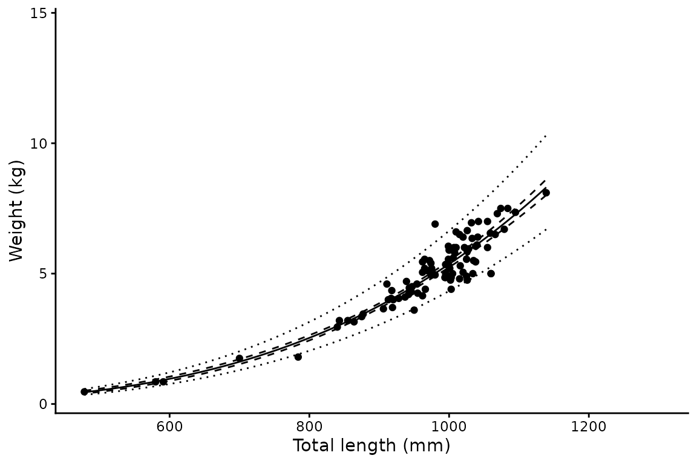

Length-weight analysis
len-weight.RmdBackground
The relationship between body mass and length in fishes is typically described by a power curve:
where and are the weight and length of individual , and and are estimated parameters. Individual variability in weight also increases with length, so a multiplicative rather than additive error structure is more appropriate:
Upon log-transformation this becomes a standard linear regression:
where
is the intercept and
is the slope. This is the model fitted by len_weight().
Bias correction
A subtle but important consequence of log-transforming the response is that back-transforming predictions gives the median weight at a given length, not the mean. For a lognormal distribution, the mean is:
where
is the residual variance. len_weight() applies this
correction automatically — all predicted values and intervals are
corrected for back-transformation bias.
Basic usage
library(mustelus)
#> Welcome to mustelus package
data(spottail)
lw <- len_weight(wgt, length, data = spottail)
summary(lw)
#> # A tibble: 1 × 8
#> a Std.Error.range b Std.Error Sigma LL n len.range
#> <dbl> <chr> <dbl> <chr> <dbl> <dbl> <int> <chr>
#> 1 2.13e-10 ( 1.441 - 3.16 ) 3.47 ( 0.057 ) 0.102 166. 192 478 - 1301The summary table reports: the intercept on the natural scale (), its standard error range, the slope , its standard error, the residual standard deviation , the log-likelihood, sample size, and length range.
Grouping by sex
Pass a grouping variable to fit separate models per group. A pooled model across all groups is automatically included.
lw_sex <- len_weight(wgt, length, sex, data = spottail)
#> The categorical variable sex has 2 levels.
summary(lw_sex)
#> # A tibble: 3 × 8
#> a Std.Error.range b Std.Error Sigma LL n len.range
#> <dbl> <chr> <dbl> <chr> <dbl> <dbl> <int> <chr>
#> 1 2.13e-10 ( 1.441 - 3.16 ) 3.47 ( 0.057 ) 0.102 166. 192 478 - 1301
#> 2 1.12e-10 ( 0.618 - 2.037 ) 3.56 ( 0.086 ) 0.0968 91.7 99 691 - 1301
#> 3 4.47e-10 ( 2.457 - 8.148 ) 3.36 ( 0.087 ) 0.107 76.9 93 478 - 1139Plotting
plot() returns a named list of ggplot objects — one per
group — which can be customised with standard ggplot2 calls. The solid
line is the predicted mean, the dashed ribbon the 95% confidence
interval, and the dotted ribbon the 95% prediction interval.
p <- plot(lw_sex)
p$f + xlab("Total length (mm)") + ylab("Weight (kg)")
p$m + xlab("Total length (mm)") + ylab("Weight (kg)")
Confidence vs prediction intervals
Both interval types appear in the output. They answer different questions:
- Confidence interval — uncertainty in the mean weight at a given length. Narrows with more data.
- Prediction interval — expected spread of individual weights at a given length. Reflects the biological variability captured by and does not narrow appreciably with more data.
For most fisheries reporting purposes the prediction interval is more informative, as it describes the range of weights you would expect to observe in the field.
Using other length measurements
The function accepts any positive numeric predictor — fork length, precaudal length, or any other measurement that makes biological sense to log-transform.
lw_fl <- len_weight(wgt, FL, data = spottail)
summary(lw_fl)
#> # A tibble: 1 × 8
#> a Std.Error.range b Std.Error Sigma LL n len.range
#> <dbl> <chr> <dbl> <chr> <dbl> <dbl> <int> <chr>
#> 1 0.00000000249 ( 1.782 - 3.485 ) 3.22 ( 0.05 ) 0.0940 172. 181 358 - 1015Output structure
The result is a nested tibble with one row per group. List columns
data, coefs, preds, and
mods are named by group level for direct access:
# Fitted lm object for females
lw_sex$mods[["f"]]
#>
#> Call:
#> lm(formula = log(weight) ~ log(length), data = data)
#>
#> Coefficients:
#> (Intercept) log(length)
#> -22.91 3.56
# Predicted values for the pooled group
head(lw_sex$preds[["all"]])
#> length weight clower cupper plower pupper
#> 1 478 0.4184922 0.3842572 0.4557772 0.3362275 0.5208845
#> 2 479 0.4215356 0.3871409 0.4589861 0.3387031 0.5246255
#> 3 480 0.4245948 0.3900401 0.4622108 0.3411916 0.5283856
#> 4 481 0.4276697 0.3929549 0.4654514 0.3436931 0.5321648
#> 5 482 0.4307604 0.3958853 0.4687079 0.3462076 0.5359633
#> 6 483 0.4338670 0.3988315 0.4719803 0.3487351 0.5397810The preds data frame contains six columns:
length, weight (bias-corrected mean),
clower/cupper (95% confidence interval), and
plower/pupper (95% prediction interval).